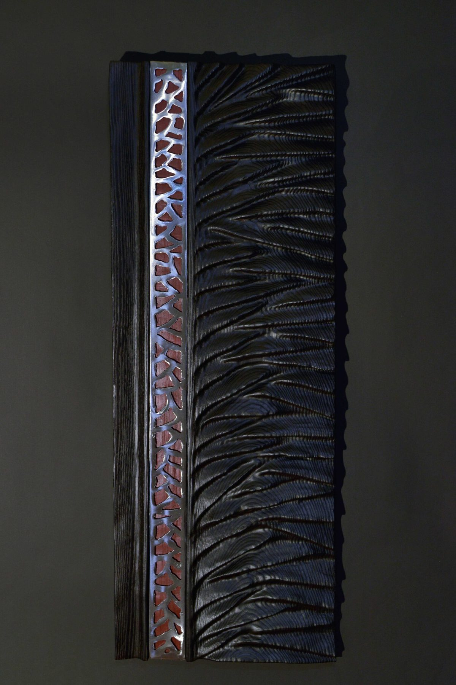
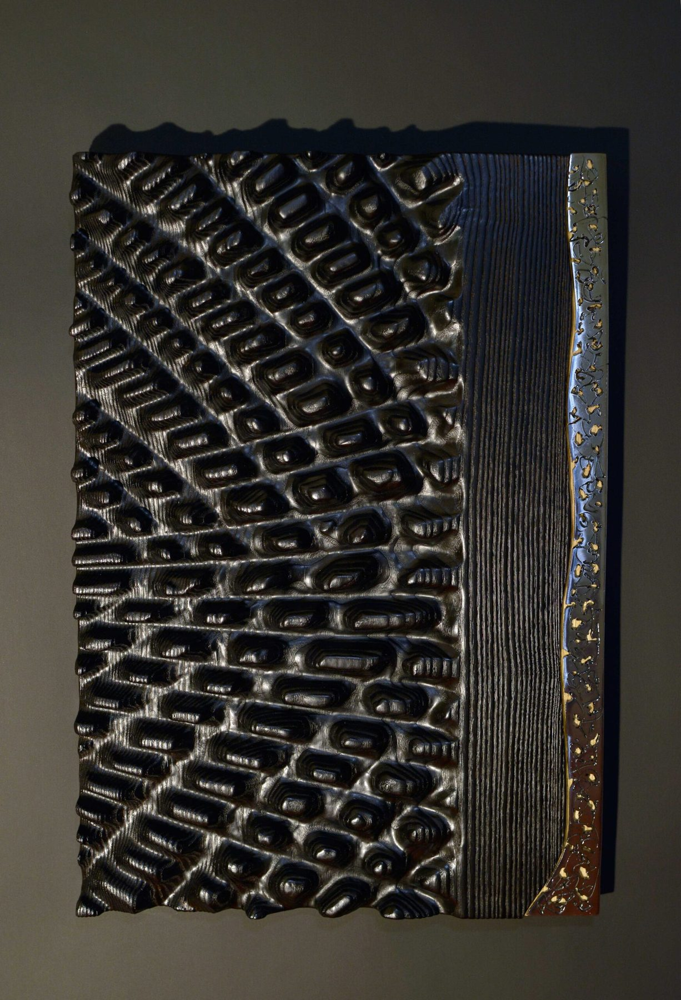
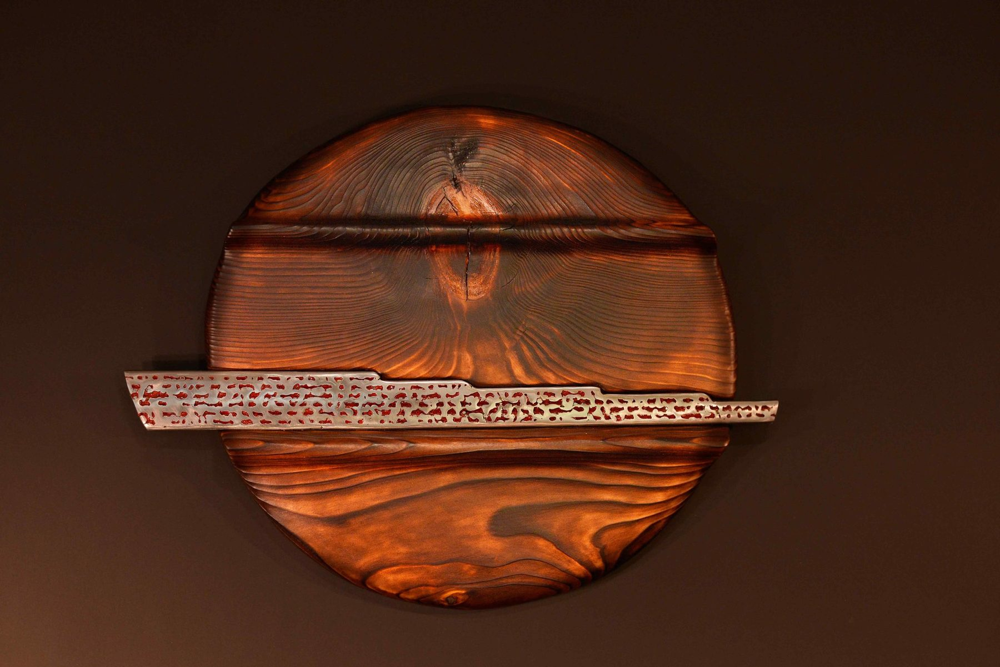
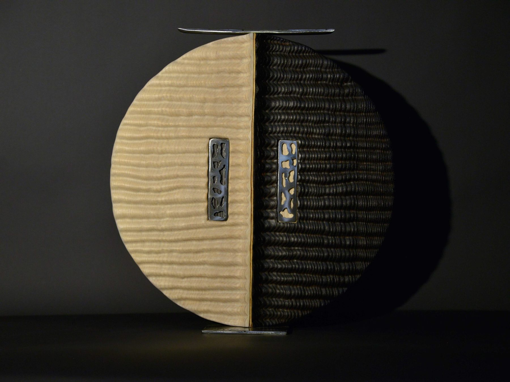
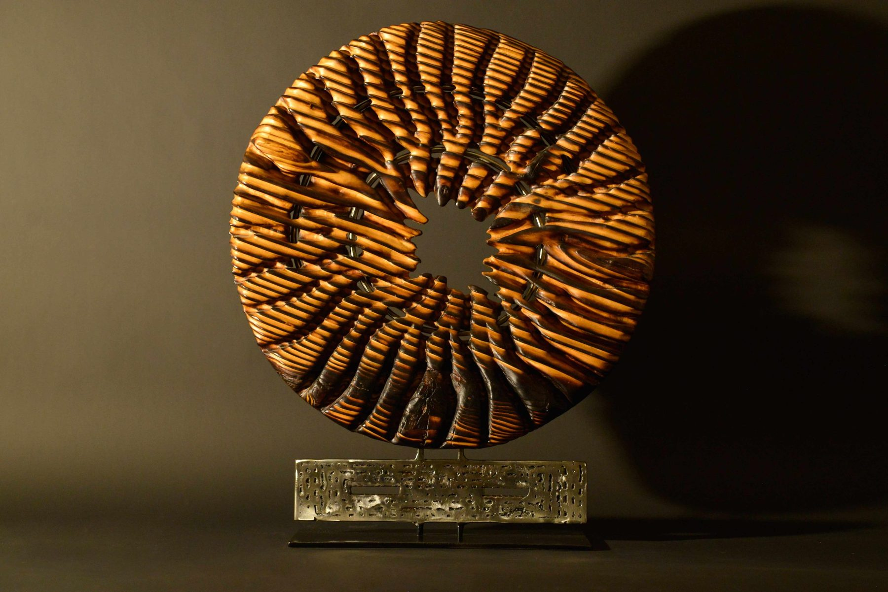
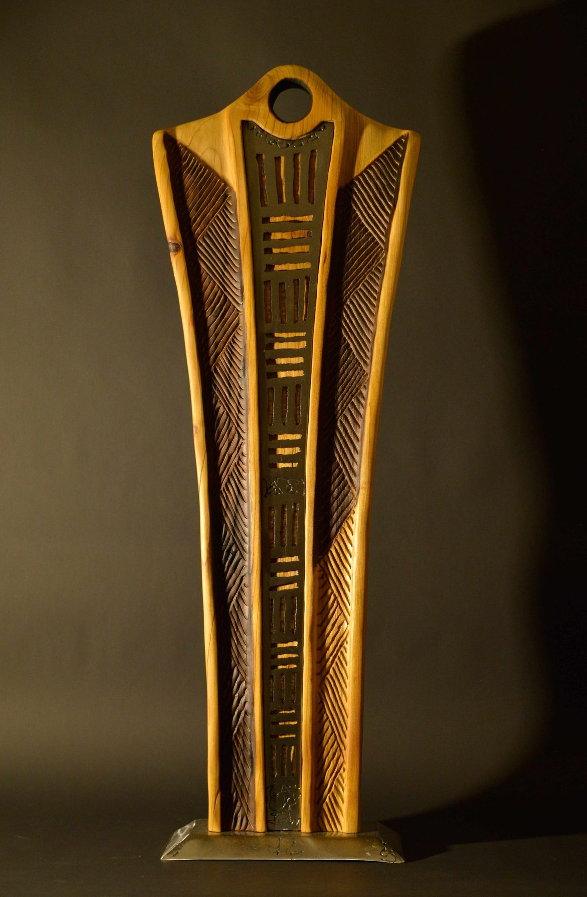
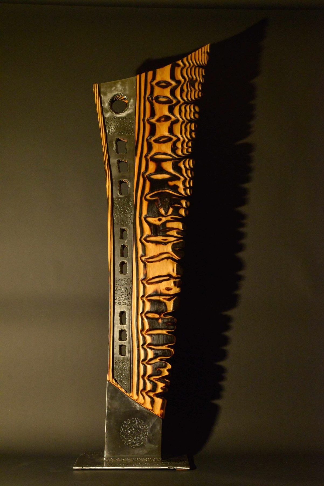
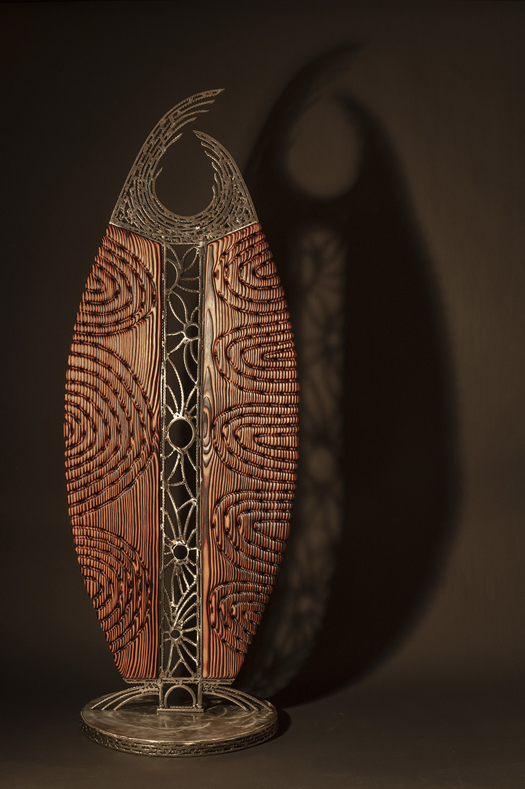
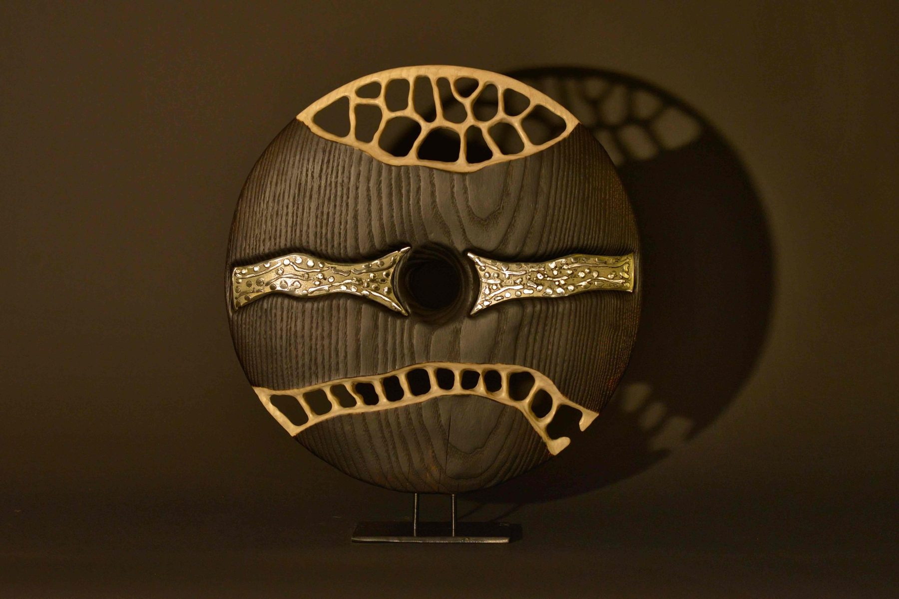
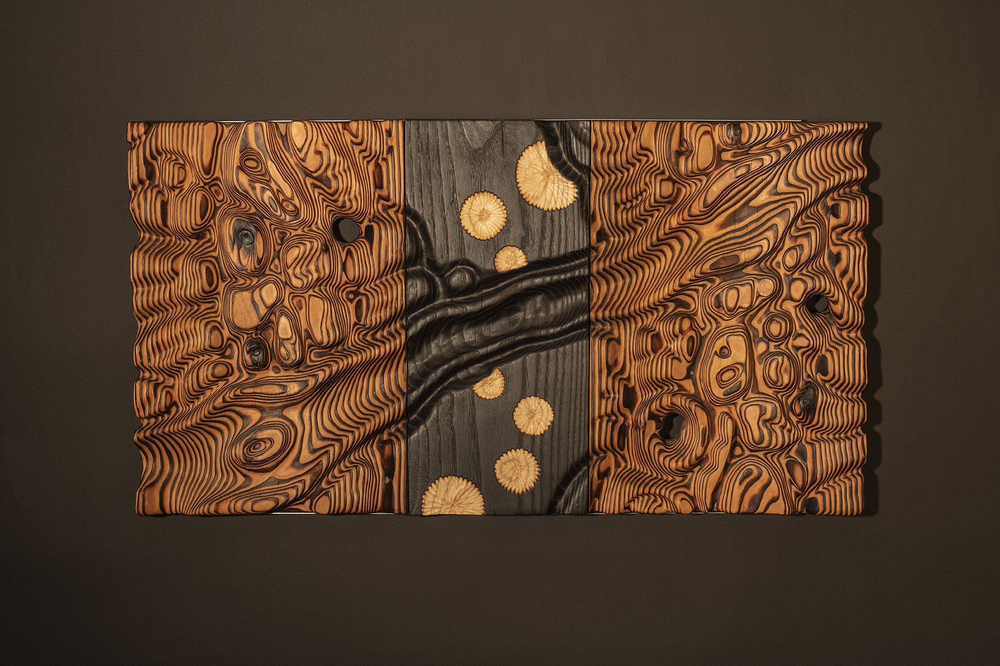

24FMR0303·80 × 30 × 3 cm·Frêne, acier

Qui révélera l’énigme des origines du noir,lorsque dans un temps enfoui, les sept couleurs de l’arc-en-cielemportées dans un mouvement insenséroulèrent les unes contre les autres,jusqu’à l’effacement, la nudité absolue,pour rendre au noir toute sa clarté, sa puissance sauvage,pour l’affranchir de son exil.

24FMR0303·80 × 30 × 3 cm·Frêne, acier

24FM0503·55 × 37 × 4 cm·Frêne, acier
Il y a quelque 3000 ans des hommes et des femmes entreprenaient desvoyages périlleux pour se retrouver seuls avec les Miroirs d’Énigme.

21CM0109·38 × 48 × 4 cm·Cèdre, métal

23CM0307·20 × 3 cm·Cèdre, acier

23FM0112·Ø 36 × 34 × 3 cm·Frêne, acier

22DM0206·47 × 38 × 4 cm·Pin douglas, acier
Les Gardiens de la Terre sont des messagers bienveillants etprotecteurs, sans âge ni origine, porteurs de l’histoire del’humanité.

23CM0408·75 × 25 × 4,8 cm·Cèdre, acier

23DM0101·115 × 32 × 4 cm·Pin douglas, acier
Les sculptures présentées dans ce catalogue appartiennent à des collectionneurs privés en France et à l’étranger.

21DM0305·110 × 40 × 2,5 cm·Douglas, métal

22FM0305·36 × 31 × 3 cm·Frêne, acier

19MBDF0212·42 × 78 × 5 cm·Douglas, frêne